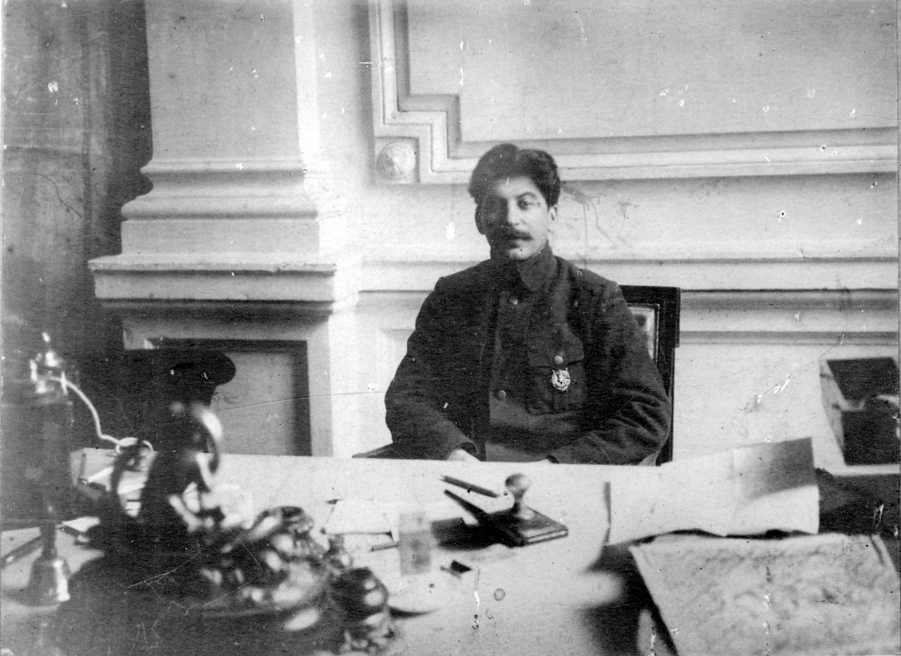

Stalin's Rise to Power
Stalin's political journey gained momentum with the onset of the Russian Revolution in 1917. He aligned himself with Vladimir Lenin's Bolshevik faction and played a crucial role in the October Revolution that led to the overthrow of the Provisional Government. As commissar for nationalities in the new government, Stalin implemented policies promoting the rights of non-Russian ethnic groups, solidifying his position within the party.
With Lenin's death in 1924, a power struggle ensued within the Communist Party. Stalin faced formidable opponents, including Leon Trotsky, Grigory Zinoviev, and Lev Kamenev. Employing cunning political maneuvering, Stalin formed alliances that allowed him to outmaneuver rivals. His strategic alliances, including a brief partnership with Nikolai Bukharin, ultimately served the purpose of eliminating potential threats to his ascent. 
The pivotal moment in Stalin's rise came during the 17th Party Congress in 1934, where he skillfully exploited divisions among his rivals. The Congress marked the beginning of the Great Purge, a campaign of political repression that targeted perceived enemies of the state, real or imagined. Stalin used the purges to eliminate opposition within the party, military, and intelligentsia, consolidating his control over the Soviet Union. By the late 1930s, Stalin had transformed the Soviet Union into an industrial power through rapid industrialization and collectivization. The cult of personality surrounding him reached its zenith, with propaganda portraying him as the infallible leader of a socialist utopia. However, this era also witnessed widespread suffering, exemplified by the Holodomor famine in Ukraine and the execution of political dissidents.
Stalin's rise to power was marked by a combination of political astuteness, ruthlessness, and strategic alliances. His leadership style, characterized by centralized control, repression, and an extensive personality cult, left an indelible mark on Soviet history. The consequences of his rule extended far beyond his lifetime, shaping the trajectory of the Soviet Union and global geopolitics for decades to come.